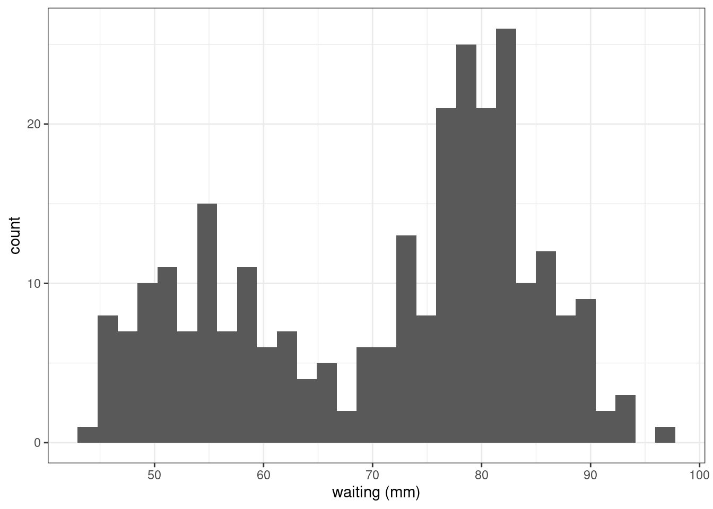
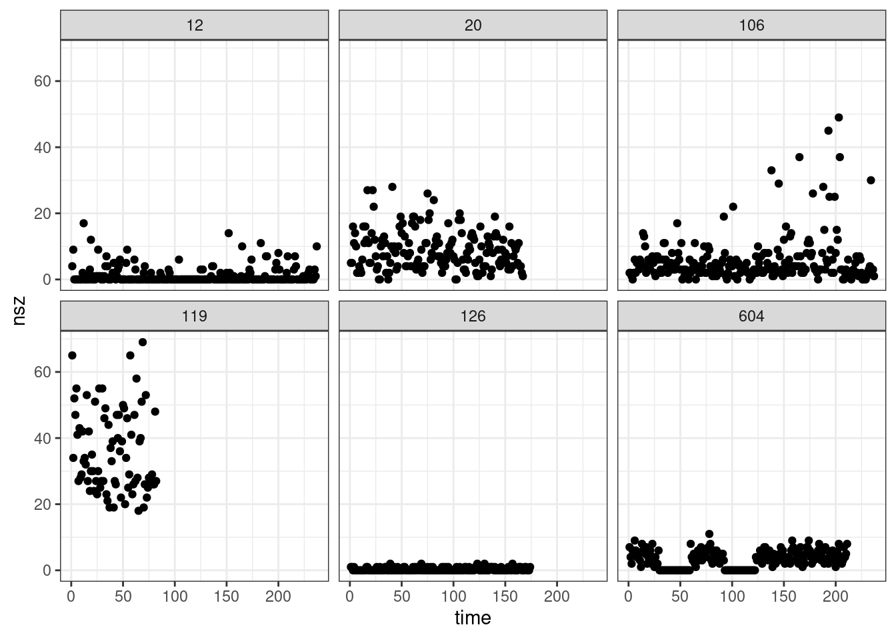

library(tidyverse)
theme_set(theme_bw())Mixture models
Exercices
1 Preliminary
Only functions from R-base and stats (preloaded) are required plus packages from the tidyverse for data representation and manipulation.
2 Introduction to mixture models
The faithful data consist of the waiting time between eruptions and the duration of the eruption for the Old Faithful geyser in Yellowstone National Park, Wyoming, USA.
data("faithful")
faithful %>%
ggplot() + aes(x=waiting) + geom_histogram() + xlab("waiting (mm)")`stat_bin()` using `bins = 30`. Pick better value with `binwidth`.
Fit variants of a mixture of two Gaussian distributions to the faithful data.
assuming different proportions, means and variances for the 2 distributions
assuming same variances
assuming same means
assuming same proportions
2.1 Hint: skeleton of EM for 1D mixture of Gaussian
We follow what has been done during the course: we define the function that computes the value of the likelihood for each point in each component. It will be used to compute the posterior probabilities in the E-step.
## likelihood (density) of each point in each component
## data (x) is fixed while theta is variable
dcomponents <- function(theta, x) {
mapply(
function(pi, mu, sigma) pi * dnorm(x, mu, sigma),
theta$pi, theta$mu, theta$sigma,
SIMPLIFY = TRUE
)
}Then, we define an EM where the function that computes the M step is given as an argument:
mixture_gaussian1D <-
function(x, # a n-vector of data
theta0, # starting values of vector paramter
M_step = M_step_general, # an R function
max_iter = 100,
threshold = 1e-6) {
## initialization
n <- length(x)
likelihoods <- dcomponents(theta0, x)
deviance <- numeric(max_iter)
deviance[1] <- -2 * sum(log(rowSums(likelihoods)))
for (t in 1:max_iter) {
# E step
tau <- likelihoods / rowSums(likelihoods)
# M step
theta <- M_step(tau, x)
## Assessing convergence
likelihoods <- dcomponents(theta, x)
deviance[t+1] <- - 2 * sum(log(rowSums(likelihoods)))
## prepare next iterations
if (abs(deviance[t + 1] - deviance[t]) < threshold)
break
}
list(theta = theta, deviance = deviance[t + 1])
}3 Epilepsy data
The data seizures.csv consists of daily counts of epileptic seizures for 6 patients.
seizures <- readr::read_csv('../../data/seizures.csv')
seizures %>%
ggplot() + aes(x = time, y = nsz) + geom_point() + facet_wrap( ~ id)
Select the id 12 and fit a Poisson distribution to the number of seizures for this patient.
Implement and use a EM algorithm for fitting a mixture of 2 Poisson distributions to this data
Compare the two models